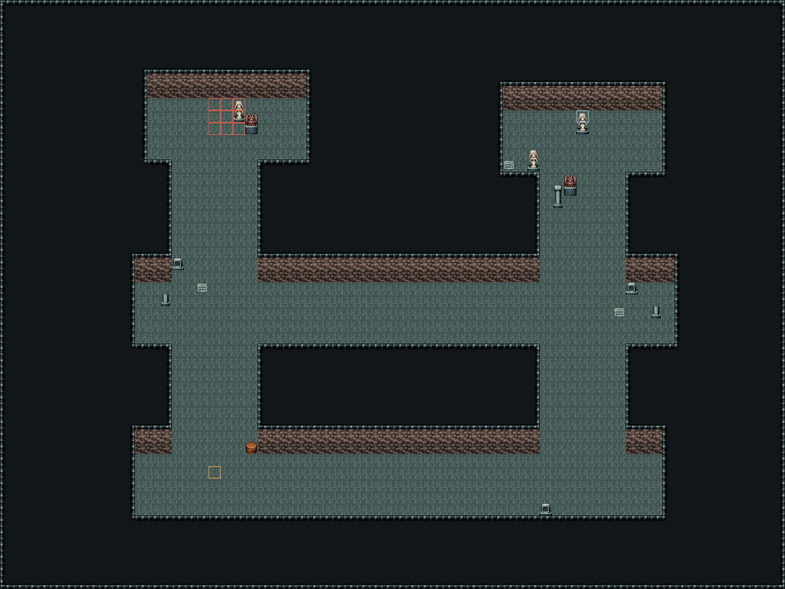
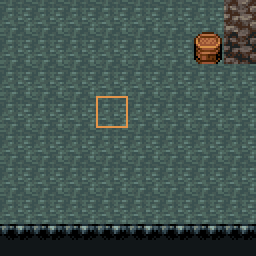
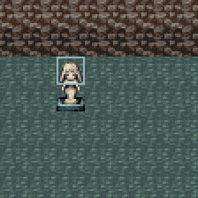
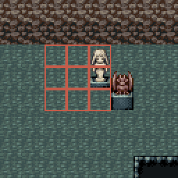
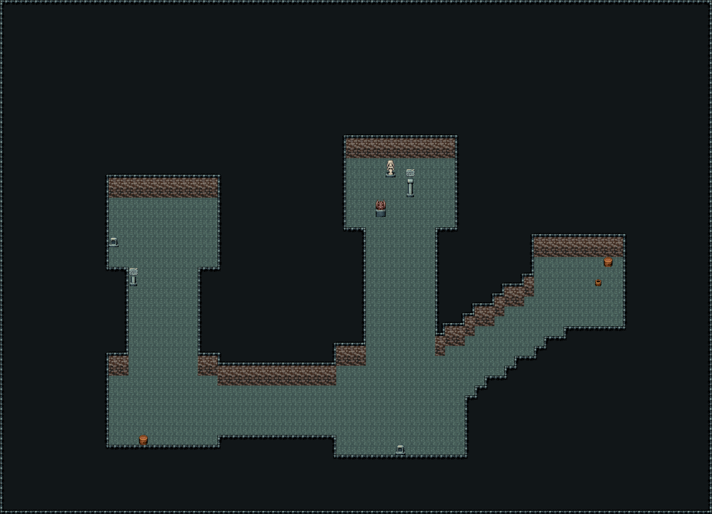
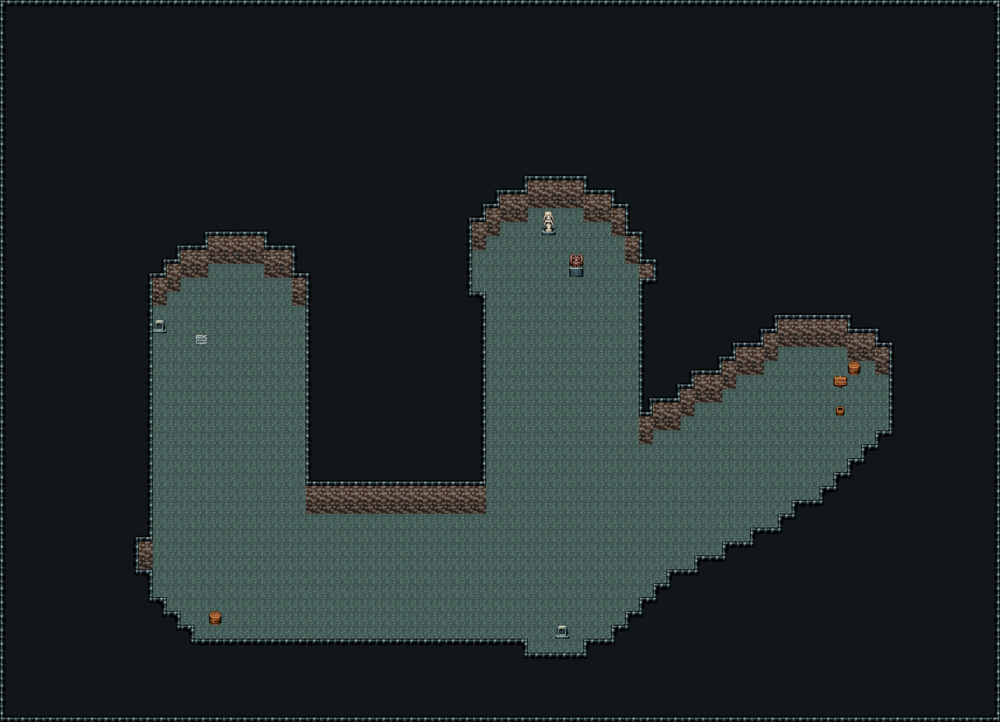
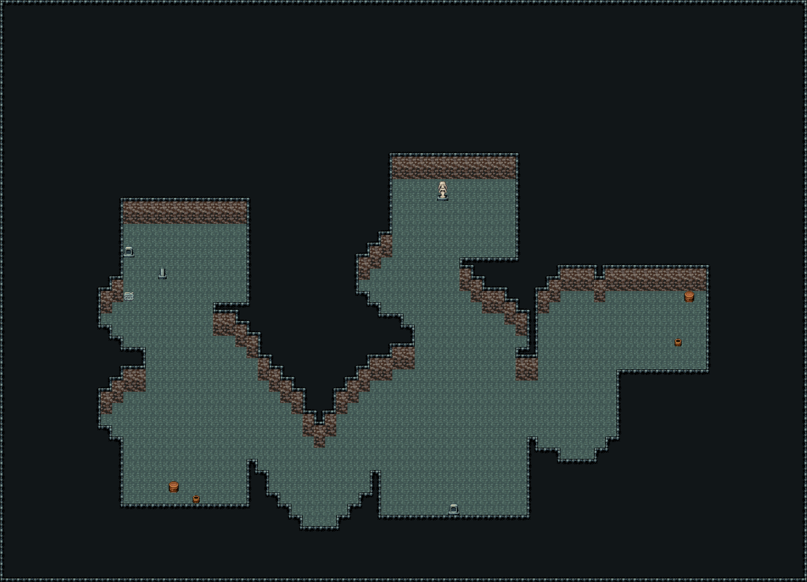
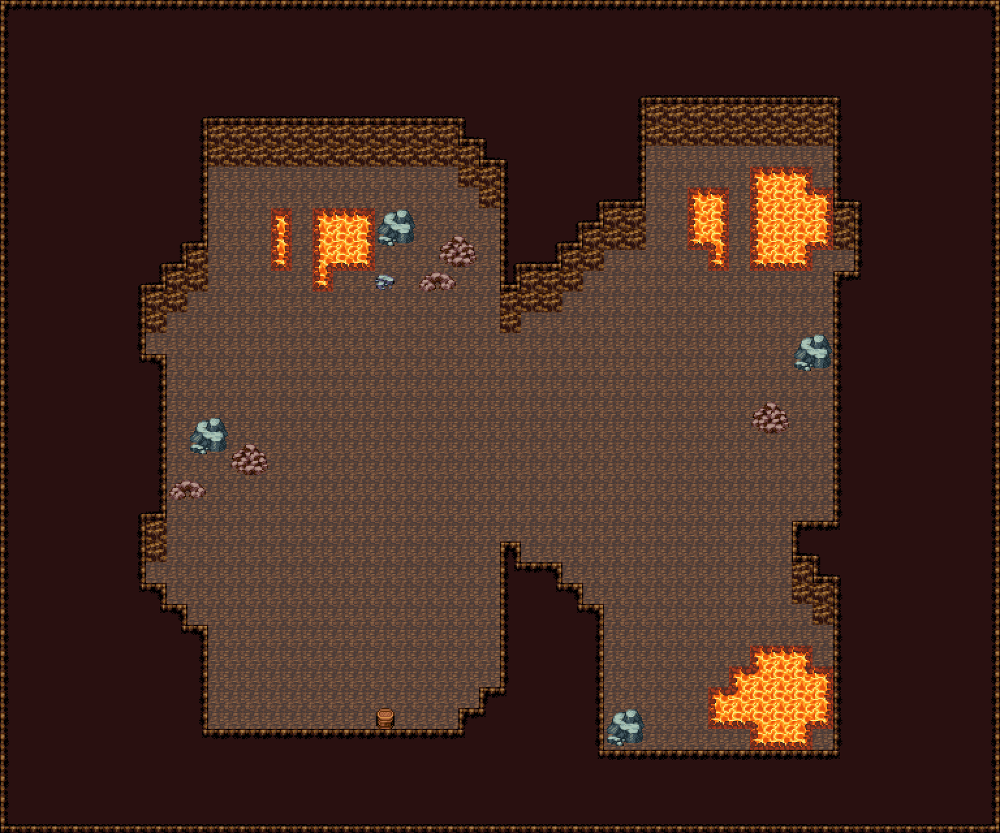
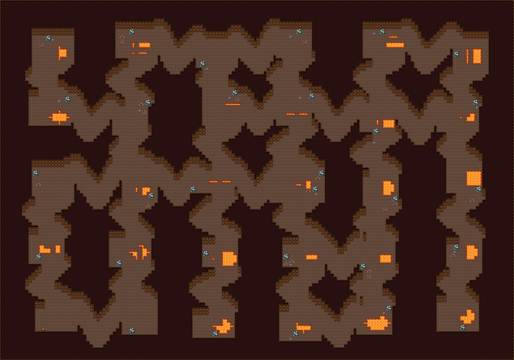

PR #1143 · 같은 생성기가 그린 맵
던전은 요청의 장소가 되었다
조수가 세계관과 이번 말로 길의 형태를 정한다. 코드는 그 계획대로 바깥으로 돌아가는 문, 먼 방의 표지, 순찰을 남긴다.

출입구 (17, 38) · 바깥 맵과 왕복
표지 · 제단 (47, 9)
순찰 · 박쥐 트룹, 추격
석조, 곧은 길, 64×48, 시드 3. 경고 없음. 바깥 맵에도 돌아오는 문이 있다.

문은 그림이 없다. 밟으면 바깥 맵으로 옮기는 칸이다. 상대 맵에도 같은 칸이 있다.

표지는 입구에서 가장 먼 방의 석상이다. 이번 요청의 표지는 제단이었다.

순찰은 몬스터 그림이 아니라 스폰이다. 트룹 id가 있을 때만 놓는다.
같은 다섯 방, 다른 길
방의 좌표는 같다. 달라진 것은 조수가 고른 path뿐이다.
straight
곧은 방, 좁은 통로

무덤, 신전, 석조. 방은 사각형이고 길은 방을 녹이지 않는다.
cave
경계가 녹는 공동

자연 동굴. 방 가장자리가 둥글고 통로가 넓어 방이 이어져 보인다.
winding
방은 남고 길만 꺾임

갱도, 수로. 방은 곧게 두고 사이만 꺾는다.
맵이 커지면 방이 커지지 않는다
같은 시드, 같은 용암, 같은 꺾인 길. 48×40은 방 6개, 160×112는 방 30개다.
48×40 · 방 6

방이 가까워 통로가 홀처럼 붙는다.
160×112 · 방 30

칸을 키우는 대신 방의 수를 늘렸다. 용암과 수정은 방 안에 남는다.
조수가 칸을 칠하기 전에 적는 것
원래 무엇이었나신전, 광산, 동굴, 소굴
지금은 어떤가무너짐, 점거, 범람
누가 있나트룹이 있으면 순찰
왜 들어가나표지가 먼 방에 선다
그 답이 path, linkMapId, landmark, pressure가 된다. 코드는 형태를 대신 고르지 않는다. 생략하면 묘지만 곧은 실루엣이고, 나머지는 동굴이다.
밀물과 차오르는 물은 아직 물이 차오르는 타일이 아니다. 입구 옆에서 배회하는 투명한 사건이다. 잠긴 문, 열쇠, 들어갔다 나오면 현장이 바뀌는 규칙은 이번 머지에 없다.